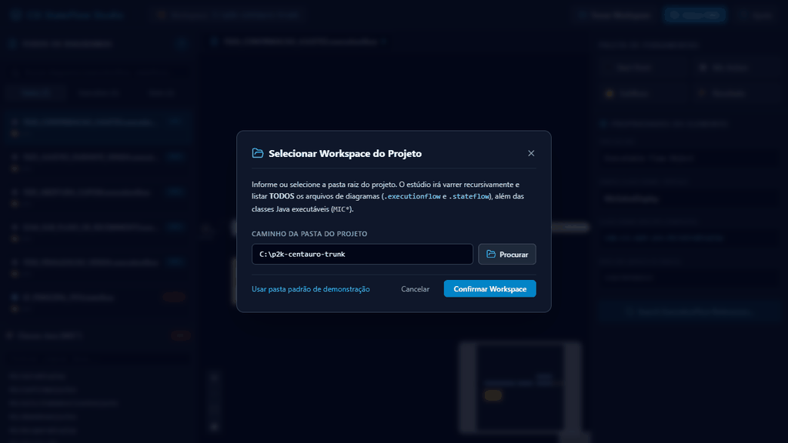
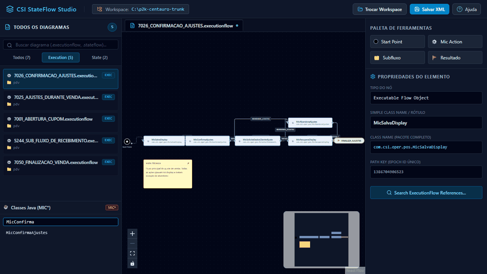
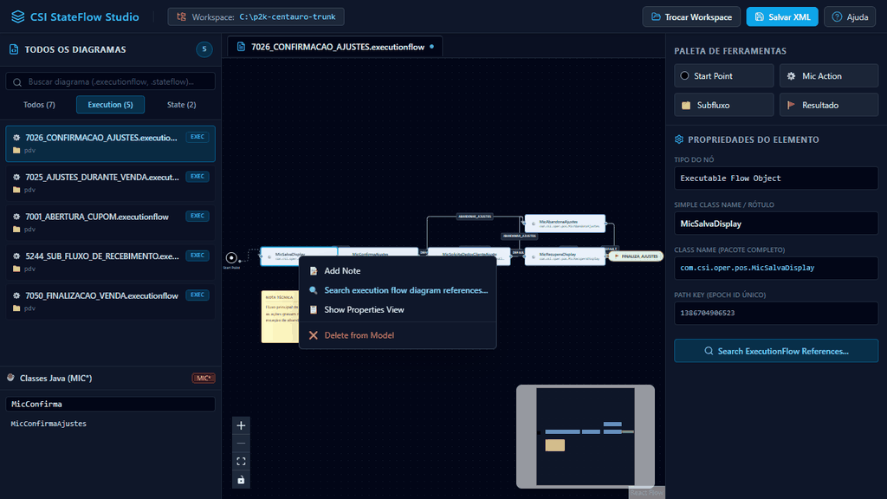

🚀 1. Visão Geral & Plataforma Tri-Híbrida
Fonte Único 100%O CSI StateFlow Studio é uma plataforma moderna e autônoma desenvolvida para substituir com fidelidade visual absoluta o antigo plugin Eclipse GMF de 2010. Construído em arquitetura tri-híbrida de fonte único, a mesma base de código React e os motores XML/Graph rodam transparentemente na Web, no Desktop e no VS Code.
Testes Passando (100%)
Classes Java MIC* Suportadas
XML 100% Compatível P2K
Dependência do Eclipse
Opera no navegador via W3C File System Access API com reconexão em 1 clique via IndexedDB e geração de backups locais.
Aplicativo executável desktop com diálogos nativos do Windows/Linux e leitura de diretórios sem restrições de sandbox.
Abre arquivos .executionflow e .stateflow diretamente como abas nativas, ocupando 100% da tela útil com auto-sync em tempo real e Ctrl+S.
📑 2. Workspace & Varredura Real de Diagramas e Classes
Varredura Recursiva
Ao selecionar a pasta raiz do seu projeto corporativo (ex: p2k-centauro-trunk), o sistema realiza a leitura em tempo real de todo o workspace:
- Todos os Diagramas: indexação de centenas de arquivos
.executionflowe.stateflow, organizados por pasta e tipo, com busca instantânea e filtros por fluxo semântico. - Todas as Classes MIC*: varredura real nos diretórios de fontes Java (ex:
fonte/projetos/), detectando o nome simples da classe e o pacote completo. - Reconexão em 1 Clique: no navegador Web, a pasta é memorizada no IndexedDB seguro do navegador. Ao reabrir a página, basta clicar no banner superior para restabelecer a conexão sem precisar selecionar o diretório novamente.

⚡ 3. Edição Completa de Transições (Rótulos das Arestas)
Aperfeiçoado nas Últimas Rodadas
No CSI, a saída e condição de avanço de um nó para outro é definida pelo rótulo da transição (ex: DEFAULT, CONFIRMAR, SUCESSO). Agora o estúdio oferece três maneiras fluidas e coordenadas para alterar esse valor:
Dê um duplo-clique diretamente no badge da transição sobre o canvas. Um input flutuante se abre com foco automático e texto selecionado. Digite o novo nome e pressione Enter ou clique em OK.
Clique com o botão direito em qualquer transição para abrir o menu contextual seguro com as opções:
- ✏️ Editar no Canvas (Inline)
- 📋 Editar em Propriedades (abre e seleciona o input lateral)
- Atalhos rápidos de presets
- ❌ Excluir Transição
Ao selecionar uma transição, a aba lateral direita exibe os detalhes completos da conexão: Nós de Origem e Destino, Campo de Edição do Rótulo com autocomplete e botões de atalho:
🎨 4. Modelagem no Canvas & Painel de Propriedades
Fidelidade GMFVisualização limpa e fluída baseada em nós React Flow: nós de Início (círculo preto), Ações MIC (caixas azuis com engrenagem), Subfluxos (ícone amarelo de execução) e Resultados (badges verdes). A seleção de qualquer nó atualiza instantaneamente o inspetor lateral de propriedades (Simple Class Name, Pacote Completo e PathKey).
🔍 5. Busca Cruzada de Referências de Classes (MIC*)
Equivalente Eclipse
Replicação fiel e direta da funcionalidade "Search ExecutionFlow Diagram References..." do Eclipse: clique com o botão direito em qualquer classe Java MIC* ou em um nó no canvas. O estúdio abre a gaveta inferior destacando todos os diagramas que contêm o nó e o seu respectivo pathKey com abertura em 1 clique.

💻 6. Extensão Oficial para Visual Studio Code
Nova Extensão VSIX
Para desenvolvedores que trabalham no VS Code, o CSI StateFlow Studio pode rodar como uma extensão nativa (CustomTextEditorProvider). Desta forma, o desenvolvedor não precisa alternar para outra janela ou navegador.
A barra lateral de arquivos do app é ocultada, já que o Explorer nativo do VS Code assume a navegação.
Modificações no canvas marcam a aba como alterada (●). O atalho Ctrl+S nativo e o Git Diff funcionam normalmente.
O host do VS Code varre automaticamente em background os arquivos Mic*.java do projeto aberto.
code --install-extension vscode-extension/csi-stateflow-vscode-0.1.10.vsix
Ou abra o VS Code, pressione Ctrl + Shift + P, digite "Extensions: Install from VSIX..." e selecione o arquivo gerado na pasta vscode-extension/.
?env=vscode na URL.
💾 7. Gravação Atômica com Backup Automático (.bak) & XML Seguro
100% Round-TripPara garantir total segurança ao modificar arquivos de produção de grande porte, o serializador XML opera com padrões industriais rigorosos:
- Backup Automático (.bak): antes de gravar qualquer alteração em disco, o sistema gera automaticamente uma cópia de segurança idêntica com extensão
.bakno mesmo diretório. - Padronização CRLF Windows: todo arquivo XML é salvo obrigatoriamente com quebra de linha
\r\n, garantindo total conformidade com a máquina de estados P2K legada e com o Eclipse. - PathKey Determinístico de 13 Dígitos: todo nó ou resultado criado recebe um identificador baseado no timestamp Epoch em milissegundos, exatamente idêntico ao gerado pelo GMF.
